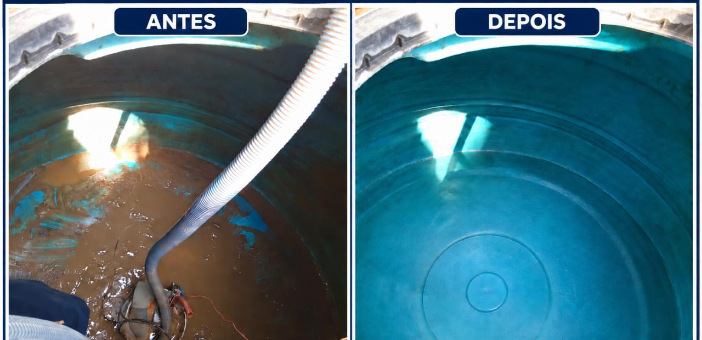
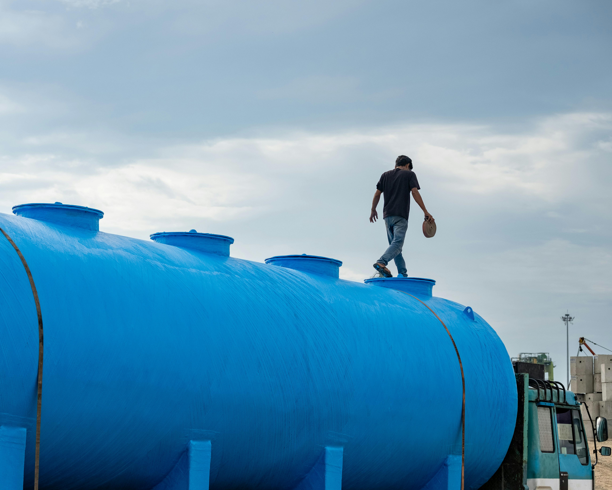
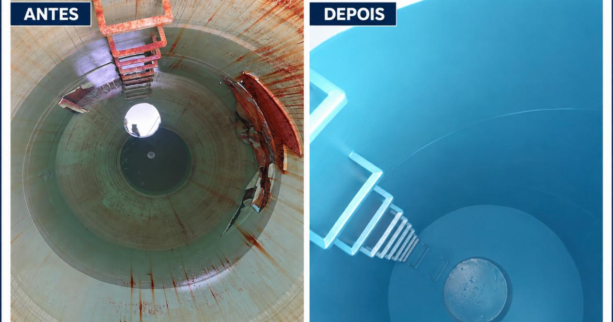
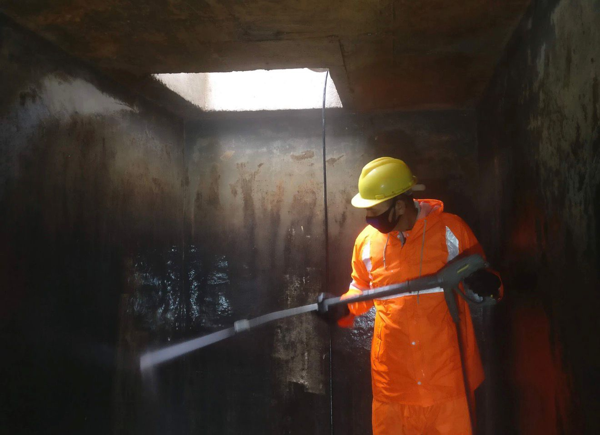

LIMPEZA • REFORMA • MANUTENÇÃO
Atendemos reservatórios metálicos, de polietileno, fibra, inox e concreto em Indaiatuba e região. Soluções profissionais para conservar seu reservatório e cuidar da qualidade da água.
A VR Reservatórios Serviços Gerais é especializada em limpeza, higienização, reforma e manutenção de reservatórios de água.
Atendemos condomínios, indústrias, empresas e residências, oferecendo soluções para diferentes tipos de reservatórios, sempre com atenção à segurança, qualidade e conservação das estruturas.
Nosso compromisso é oferecer um atendimento profissional, identificando as necessidades de cada reservatório e indicando a melhor solução.

Remoção de resíduos e sujeiras, lavagem e desinfecção de caixas d'água, reservatórios e cisternas.
Por que fazer? O acúmulo de sujeira pode comprometer a qualidade da água armazenada.

Inspeção de tampas, conexões, registros, tubulações e condições gerais do reservatório.
Por que fazer? Identificar desgastes e vazamentos ajuda a evitar falhas e interrupções.

Avaliação da estrutura, preparação da superfície, tratamento de corrosão e recuperação da pintura conforme a necessidade.
Por que fazer? A corrosão precisa de atenção para preservar a estrutura e a conservação do reservatório.

Avaliação de trincas, fissuras e vazamentos para identificar a possibilidade e o método adequado de reparo.
Por que fazer? Um diagnóstico adequado indica quando recuperar ou substituir a caixa.
Avaliação de trincas e vazamentos para verificar a possibilidade de recuperação do reservatório quando o reparo é indicado.
Trincas e vazamentos podem provocar desperdício de água e prejudicar a utilização do reservatório.
Uma avaliação técnica permite verificar as condições da caixa e identificar a possibilidade de recuperação ou a necessidade de substituição.
Verificar a base de apoio, conexões e sinais de desgaste ajuda a identificar problemas antes que se agravem.
A manutenção acompanha as condições do reservatório e permite planejar os cuidados necessários antes que pequenos problemas se agravem.
A água armazenada exige cuidados. A limpeza periódica ajuda a remover sedimentos e conservar as condições de higiene do reservatório.
Recomendamos programar a limpeza a cada 6 meses.
A frequência deve considerar as condições de uso, as características do reservatório e as orientações sanitárias aplicáveis.Confira um pouco dos serviços realizados pela equipe da VR Reservatórios.
Hidrojateamento
Jateamento interno
Lixamento
Informe a cidade, o material e a capacidade do seu reservatório.
Para reformas e reparos, as imagens ajudam na avaliação inicial.
A VR avalia a necessidade do serviço e prepara o orçamento.
Solicite seu orçamento e receba uma orientação sobre o serviço ideal para sua necessidade.
WhatsApp: (19) 98986-9948
Endereço: R. João Ifanger Júnior, 138 - Jardim Itamaraca, Indaiatuba - SP
E-mail: vrreservatorios@gmail.com
Site: vrreservatorios.com.br
Atendimento em Indaiatuba e região.